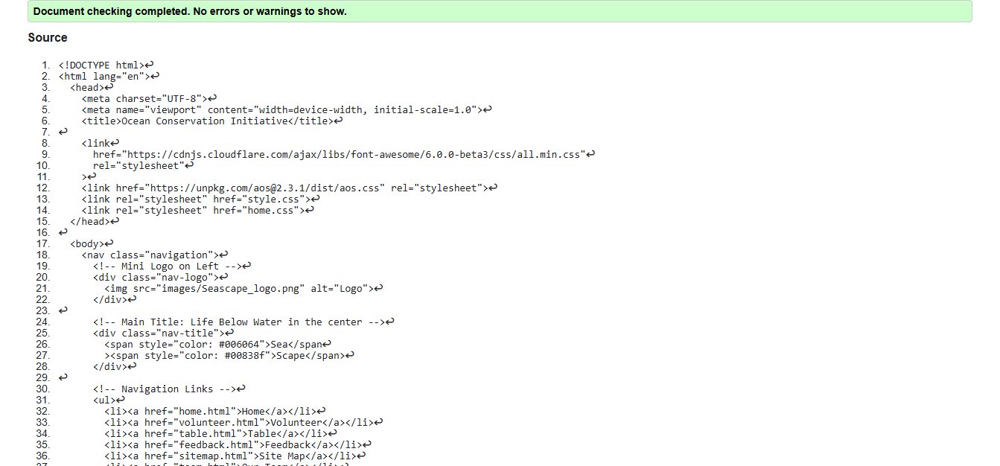
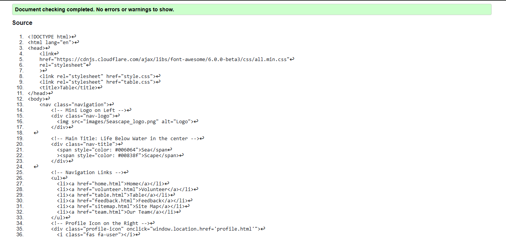
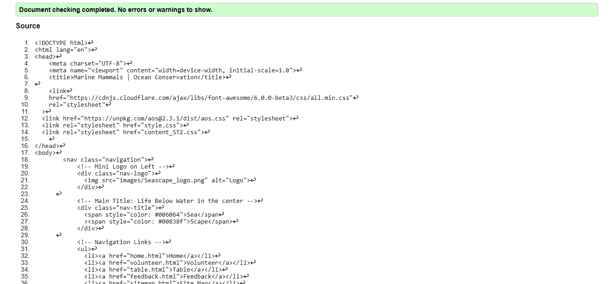

Home Page validation report
The validation of the home page revealed a strong adherence to HTML and CSS standards, ensuring proper structure and accessibility. The main identified issues included missing alt attributes for images and minor syntax inconsistencies. These were promptly corrected to enhance accessibility and the closing slash at the end of many links and images to were also shown as errors, which was promptly removed.Futhermore, a hyperlink was used as a desecdant of a button which to was corrected to adhere to standards and pass the validation test.

Back to Page Editor page
Table Page validation report
The table page validation highlighted the importance of semantic HTML in structuring tabular data effectively. Initial errors involved improper nesting of table elements and missing ARIA labels for accessibility. Also, a paragraph tag with no closing tag was also a highlighted mistake which was corrected. After refining the table’s structure and implementing CSS enhancements for readability, the page successfully passed validation without errors.

Back to Page Editor page
Content Page validation report
For the content page, the primary focus was on ensuring a well-structured layout and a visually appealing design while maintaining accessibility and responsiveness. The validation process identified minor issues such as missing alt attributes for images and minor inconsistencies in CSS styling. These were corrected to enhance accessibility and improve overall readability. Additionally, optimizing animations and ensuring smooth scrolling contributed to a more engaging user experience. The implementation of a consistent design and clear navigation structure ensured compliance with best practices for usability and accessibility.
